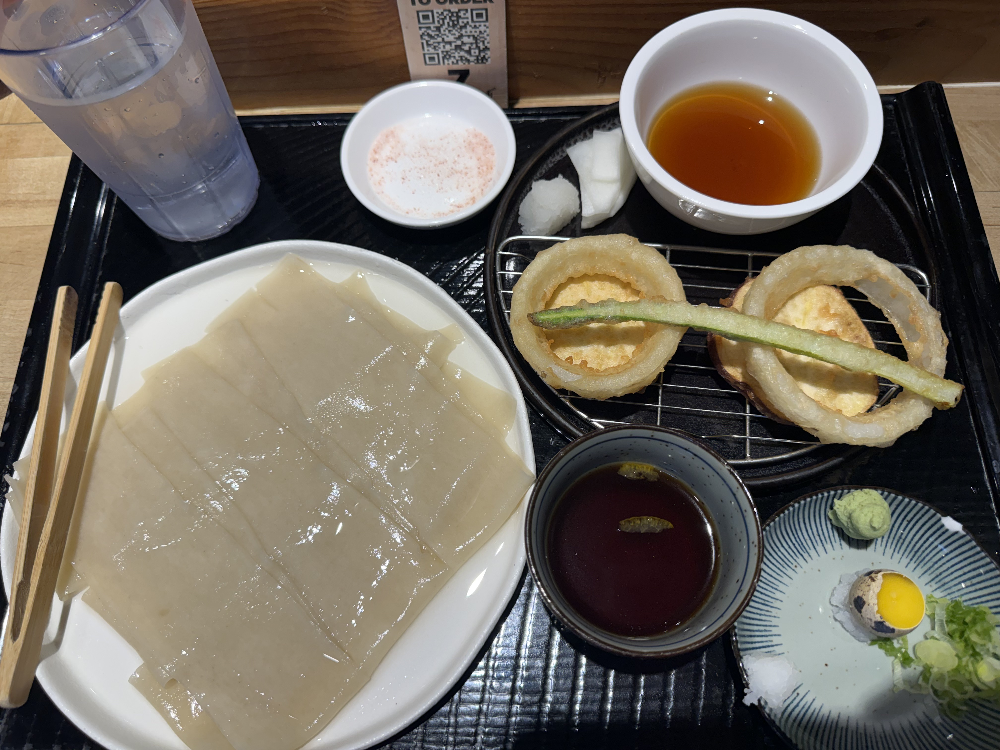
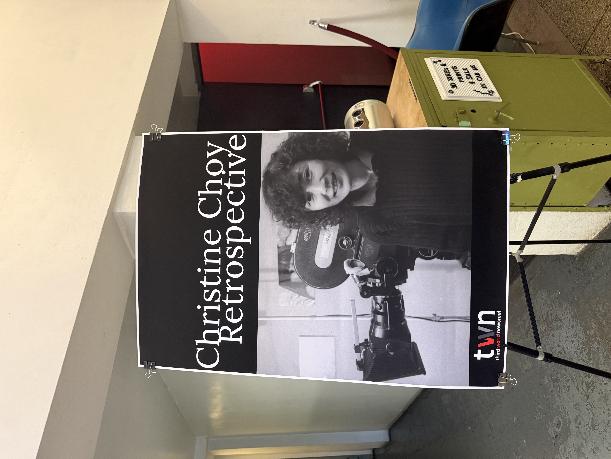
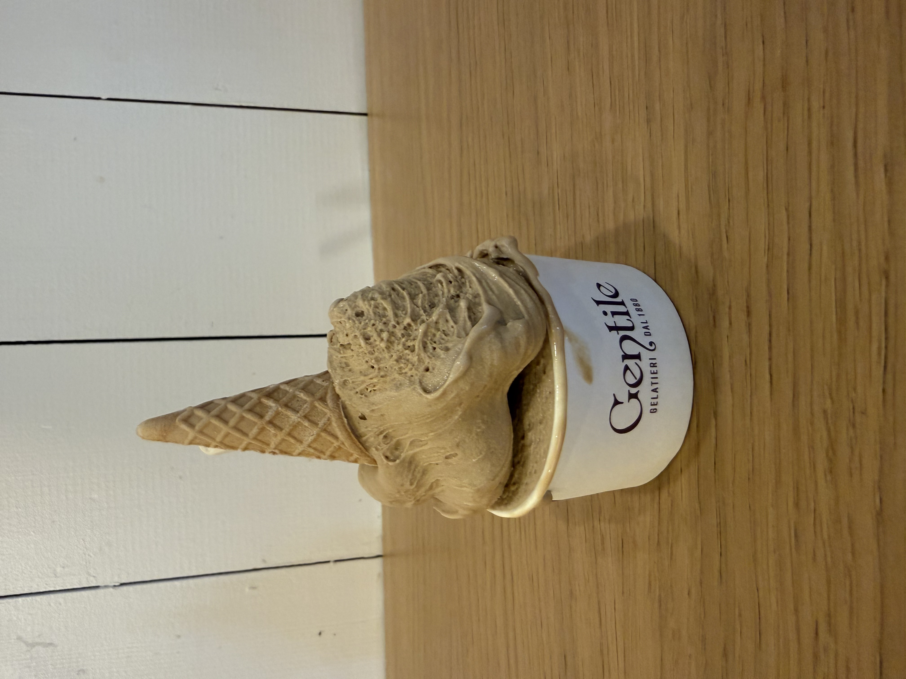

This is the Sunday in the second week of class, and I went to the Okiboru House of Udon to have dinner.
I ordered its signature Himokawa Dipping Udon set with tempura.

The dipping sauce is citrusy with hints of yuzu. The tempura adds a nice crunch to the dish. The wasabi is very strong.
I went to Anthology Film Archives for a screening of Christine Choy's films. Organized by the Third World Newsreel, it is part of Christine Choy's Retrospective.

DIRECTOR
Christine Choy is a Chinese-American filmmaker. Born in Shanghai, Christine Choy moved from South Korea to New York as a teenager and later cofounded Third World Newsreel, a distributor of socially and politcally engaged films that highlight historically marginalized communities.
Her other films include Who Killed Vincent Chin? (1988), Sa-I-Gu (1993), and My America...or Honk if You Love Buddha (1997).
One of Choy's most acclaimed films, Who Killed Vincent Chin? (1988), tells the the story of Vincent Jen Chin, a Chinese-American man who was beaten to death with a baseball bat by Ron Ebens and his stepson, Michael Nitz, who held Chin defenseless.
The film had recently restored by the Academy Film Archive and The Film Foundation to mark the 40th anniversary of Chin's death.
The film presents a rare portrait of New York's Chinatown as generations come together to organize and protest police brutality and real-estate hostility, capturing a transcontinental history of immigration and labor.
With bold strokes, it paints an overview of the community and its history, from the early laborers driving spikes into the transcontinental railroad to the garment workers of today.
After the film, I walked Gelateria Gentile to have gelato.

The gelato is creamy and has a delightful flavor. It's a perfect way to end the day.